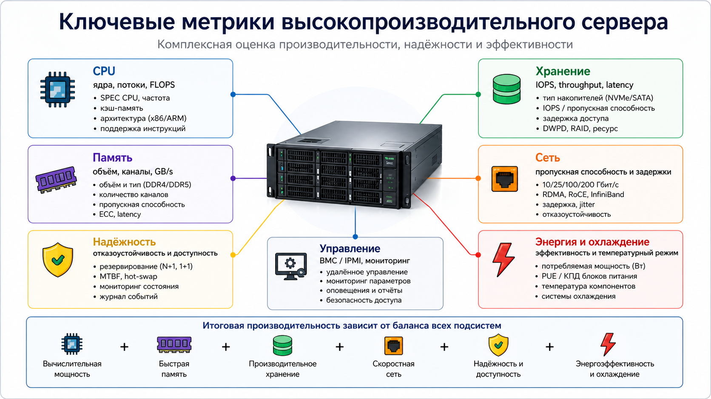

Основные характеристики высокопроизводительных серверов
Оценка высокопроизводительного сервера должна учитывать не только модель процессора, но и показатели памяти, хранения, сети, надёжности, охлаждения и энергоэффективности.

Как измеряется производительность
Вычисления
Оцениваются числом ядер и потоков, частотой, кэшем, FLOPS и результатами специализированных тестов.
Память
Учитываются объём, количество каналов, пропускная способность, задержка и поддержка ECC.
Хранение
Ключевые параметры: IOPS, throughput, latency, ресурс записи DWPD, режимы RAID.
Сеть
Важны пропускная способность в Гбит/с, задержки, поддержка RDMA и устойчивость сетевых связей.
Сводная таблица характеристик
| Характеристика | Что показывает | Примеры показателей | Значение для сервера |
|---|---|---|---|
| CPU | Вычислительный потенциал | ядра, потоки, частота, кэш, FLOPS | Определяет количество параллельных задач |
| ОЗУ | Доступность данных для CPU | объём, каналы, GB/s, latency, ECC | Влияет на БД, виртуализацию, аналитику |
| Диски | Скорость чтения и записи | IOPS, MB/s, latency, DWPD | Критично для БД, логов и аналитики |
| Сеть | Обмен с клиентами и узлами | 10/25/40/100/200 Гбит/с, RDMA | Влияет на кластеры, облака и распределённые сервисы |
| Надёжность | Устойчивость к отказам | MTBF, N+1, 1+1, hot-swap | Снижает риск простоя |
| Энергия | Затраты на работу | Вт, TDP, производительность/Вт | Определяет требования к питанию и охлаждению |
Практическое значение характеристик
Одни и те же технические показатели могут иметь разную важность в зависимости от задачи. Поэтому при выборе серверной конфигурации необходимо учитывать не только максимальные значения характеристик, но и реальный сценарий применения.
| Сценарий использования | Особенно важные характеристики | Практическое значение |
|---|---|---|
| База данных | IOPS, latency, RAM ECC, резервирование дисков | Сервер должен быстро выполнять множество небольших операций чтения и записи без потери данных |
| Виртуализация | Количество ядер, объём RAM, сеть, мониторинг | На одном физическом сервере одновременно работает несколько виртуальных машин |
| Искусственный интеллект | GPU, PCIe, пропускная способность памяти, охлаждение | Большие массивы данных должны быстро передаваться между CPU, RAM и ускорителями |
| Облачный сервис | Сеть, отказоустойчивость, масштабируемость, BMC | Сервис должен обслуживать много пользователей и сохранять доступность при росте нагрузки |
| Файловое хранилище | Объём дисков, RAID, throughput, резервное копирование | Важны скорость передачи файлов, сохранность данных и возможность восстановления |
Надёжность и режим непрерывной работы
Для серверов важна не только максимальная скорость, но и способность работать длительное время без остановки. Поэтому применяются резервирование блоков питания, горячая замена накопителей, мониторинг температур и журналирование событий.